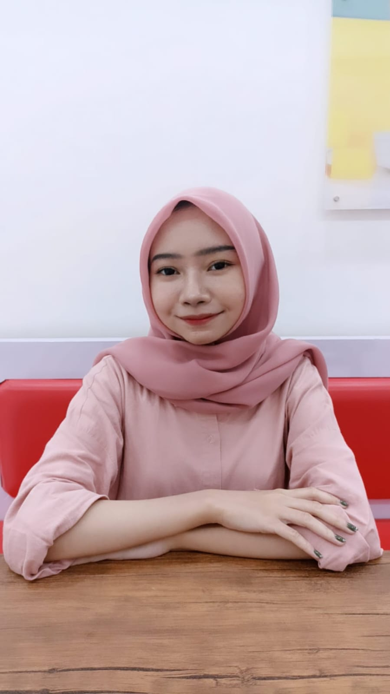
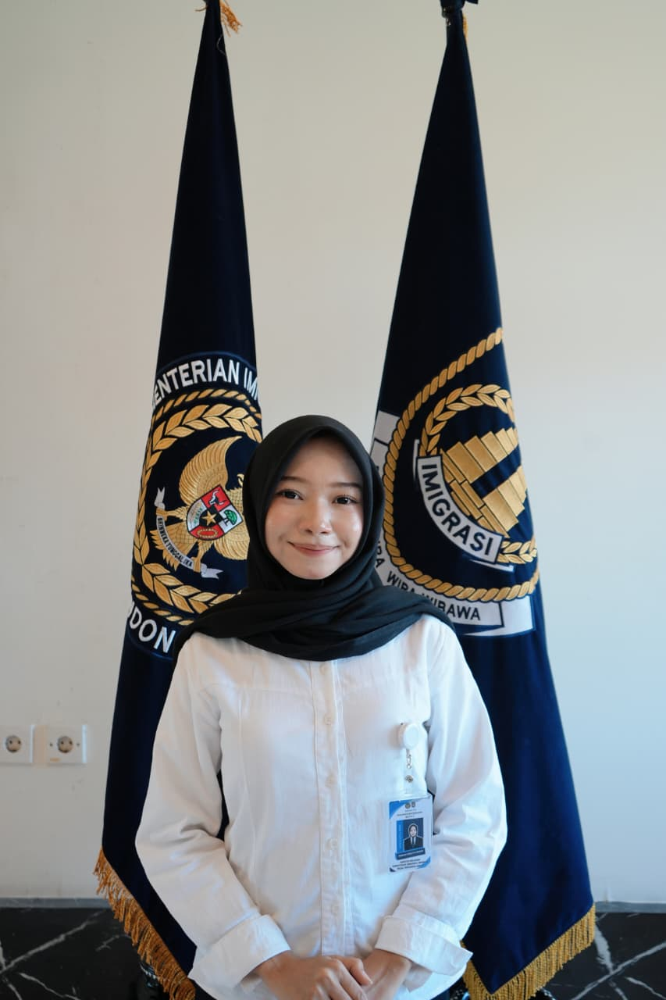
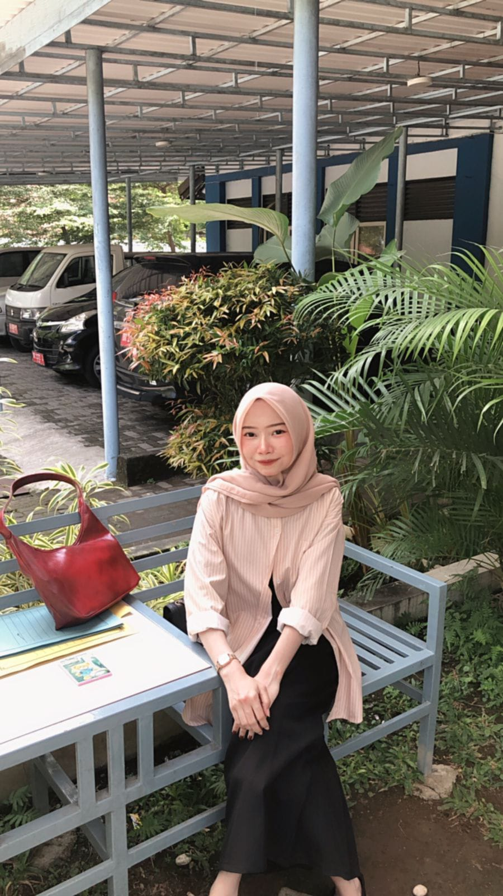

Keahlian
Perlengkapan yang saya bawa ke setiap pekerjaan
Supervising
Teamwork
Business Management
Microsoft Word
Multitasking
Time Management
Attention to Detail
Canva
Microsoft Excel
Microsoft Office
Administrasi · Manajemen Bisnis · Sumber Daya Manusia

Tentang Saya
Saya lulusan baru S1 Manajemen, Fakultas Ekonomi dan Bisnis, Universitas Mataram, dengan konsentrasi Manajemen Sumber Daya Manusia dan IPK 3,46. Saya memiliki pengalaman magang di bidang manajemen maupun non-manajemen, dan terbiasa menangani berbagai tanggung jawab secara bersamaan.
Terampil mengoperasikan Microsoft Office (Word, Excel, PowerPoint), rapi dalam mengarsipkan dokumen, serta adaptif, komunikatif, dan berorientasi pada hasil. Saya senang mempelajari hal baru untuk memberi kontribusi terbaik di setiap kesempatan.

Keahlian
Supervising
Teamwork
Business Management
Microsoft Word
Multitasking
Time Management
Attention to Detail
Canva
Microsoft Excel
Microsoft Office
Pengalaman Kerja
Periode
Nov 2025 - Mei 2026
Magang Pengelolaan & Administrasi Aset (BMN)
Kantor Wilayah Direktorat Jenderal Imigrasi, NTB
Membantu pengelolaan Barang Milik Negara (BMN) dan pencatatan inventaris, mendukung dokumentasi administrasi serta sistem pengarsipan, dan turut serta menyusun laporan terkait pengelolaan aset.
Periode
Feb 2023 - Jun 2023
Customer Service — Magang MBKM
PT. Telekomunikasi Indonesia Tbk, Witel NTB, Kota Mataram, NTB
Melayani pelanggan IndiHome, melakukan audit situs web untuk mengidentifikasi dan memperbaiki masalah, memetakan peluang pengembangan jaringan melalui program Microdemand di wilayah Kota Mataram dan Lombok Barat, serta mendukung strategi penjualan dan pemasaran yang selaras dengan tujuan jangka panjang perusahaan.
Kontak
Terbuka untuk peluang di bidang administrasi, manajemen bisnis, maupun sumber daya manusia. Silakan hubungi saya melalui salah satu saluran berikut.
